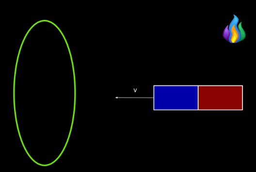
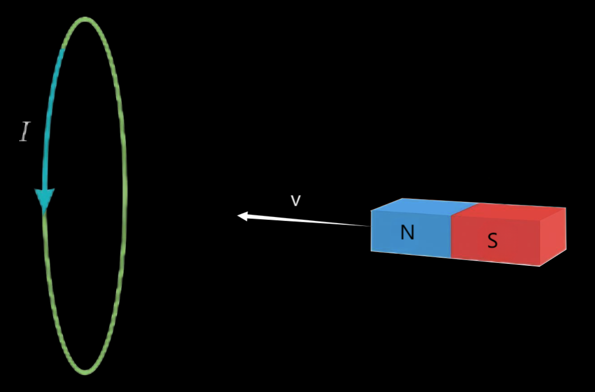

Lenz’s law is used to determine the direction of the current induced by a change in flux.
Lenz’s law states that a current induced by a magnetic field always has a direction so that the magnetic field created by that current opposes the magnetic field that originally induced it.
In other words, if the current was induced because of an increase in flux, its magnetic field will have the direction that would decrease the flux and vice versa. This is true whether the change in flux is induced by a change in area, a change in the strength of the magnetic field, or the angle between the magnetic field and the circuit.
A magnet is moving towards a circular wire as depicted in the picture. Determine the direction of the current induced.

Solution:
Since the magnet is moving towards the wire with the north pole closer, the field lines of the magnet will be entering the area of the circuit from the side with the magnet, meaning, from Lenz’s law, that the field lines of the induced current will have the opposite direction. Using the right-hand rule, where our thumb represents the magnetic field line, our fingers show us that the direction of the current is counter-clockwise, as seen in the picture:
